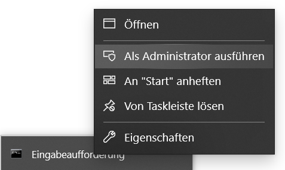
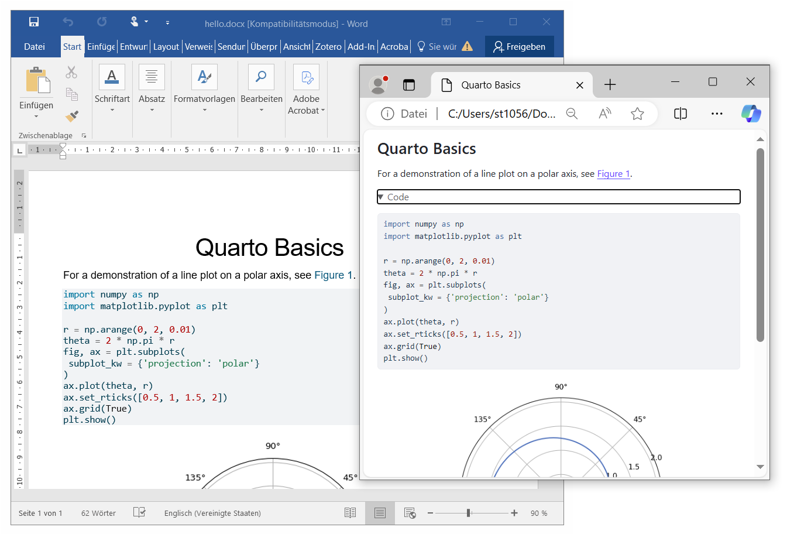
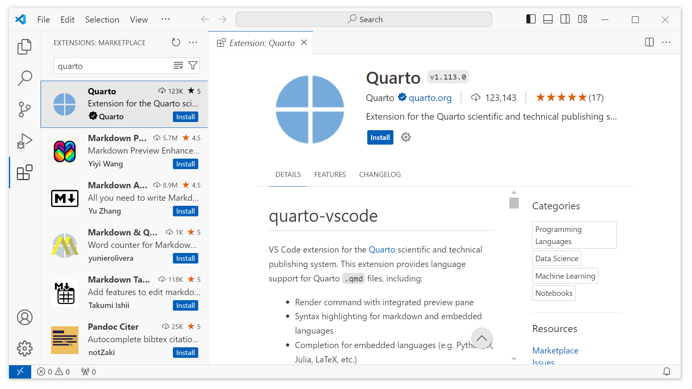

An experiment to create professional documents using simple markdown text as input.
Device:
Operating System:
Software:
1.5.54matplotlibplotlyjupyterVSCode-win32-x64-1.91.0.zipquarto.quarto-1.113.0.vsixDownload an installer for the Quarto Command Line Interface (CLI) for your operation system of choice and install. Check if Quarto is working by opening a command line interface/text terminal and typing:
quarto --version
The result should display the current version of your Quarto installation (e.g., 1.5.54).
To configure and test the publishing platform, we will follow the Tutorial: Hello, Quarto.
First, create a new file named hello.qmd and copy the following content into it:
---
title: "Quarto Basics"
format:
html:
code-fold: true
jupyter: python3
---
For a demonstration of a line plot on a polar axis, see @fig-polar.
```{python}
#| label: fig-polar
#| fig-cap: "A line plot on a polar axis"
import numpy as np
import matplotlib.pyplot as plt
r = np.arange(0, 2, 0.01)
theta = 2 * np.pi * r
fig, ax = plt.subplots(
subplot_kw = {'projection': 'polar'}
)
ax.plot(theta, r)
ax.set_rticks([0.5, 1, 1.5, 2])
ax.grid(True)
plt.show()
```
The Quarto tutorial uses the Python packages matplotlib and plotly. Also, to process executable code blocks in a .qmd file, we depend on Jupyter. After processing the executable code blocks, Jupyter converts the resulting comination of program code, markdown text, and generated data to plain markdown. This markdown is then processed by Pandoc to create the final output formats (e.g. HTML web pages, PDF documents, Microsoft Office files).
Note: We do not need to install Pandoc separately since it is bundled in Quarto internally. You can access it in the terminal with the command
quarto pandoc file.md -o out.html.
Open a terminal in Admin mode (super user priviledges, see Fig. 1) and install the required Python packages:
pip install jupyter matplotlib plotly

Note: We recommend installing these packages in a Python virtual environment (venv) to protect the global operating system level Python installation.
# Create a new venv named '.quarto-venv'
python -m venv .quarto-venv
# Activate the venv (Unix/Linux)
source .quarto-venv/bin/activate
# Activate the venv (Windows)
.quarto-venv\Scripts\activate.bat
# Install packages
(.quarto-venv) > pip install jupyter matplotlib plotly
# Deactivate the venv (optional)
deactivate
Open a terminal and render the document (see Fig. 2):
quarto render hello.qmd --to html
quarto render hello.qmd --to docx

Note: If you use a Python virtual environment (venv), you must render your Quarto documents within the activated venv.
To create PDF documents, install a recent distribution of TeX. Quarto recommends the use of TinyTeX:
quarto install tinytex
Open a terminal and render the document as a PDF document:
quarto render hello.qmd --to pdf
Download Visual Studio Code as a compressed ZIP-file archive. We do not use an installer since we want to create a portable development environment that we can save and backup independently.
Unzip the archive and inspect the folder structure. Enable portable mode by creating a data folder within VS Code's application folder:
|- VSCode-win32-x64-1.91.0
| |- Code.exe
| |- data
| |- bin
| |- ...
Install the Quarto extension for Visual Studio Code as shown in Fig. 3. Open Visual Studio Code (Code.exe), click on the Extensions button in the left panel, search for quarto and click on the Quarto Extension. In the install the extension .

Save your custom development environment (the portable Visual Studio Code installation) by creating a ZIP-file archive of the VS Code's application folder after you installed the Quarto extension. You can rename the folder before creating the ZIP-file to reflect the distinctiveness of your development environment: VSCode-win32-x64-1.91.0-quarto.zip. Integrate the ZIP-file in your project's backup process.
Create a folder examples and move the file hello.qmd and the generated documents to the folder. We will use the folder for isolated examples and experiments.
Create the following folders:
lecture -- a template for a slidedoc that represents a lecture.slides -- a template for presentation slides.book -- a template for a book.Follow the Creating a Book tutorial from the Quarto web page:
In your Visual Studio Code developmnent environment, execute the Quarto: Create Project command. Then, select Book Project and choose the book folder as the parent directory.
In the terminal, move to the book folder and execute quarto:
cd book
quarto render # render all formats
quarto render --to pdf # render PDF format only